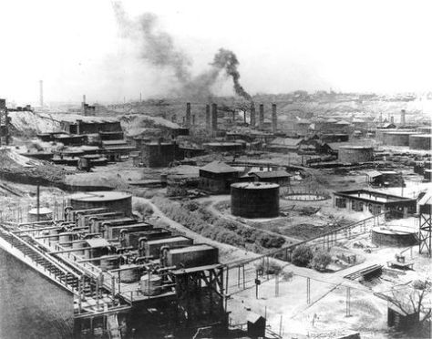

Revolusi Industri 1.0 adalah periode di mana terjadi perubahan besar-besaran di bidang pertanian, manufaktur, pertambangan, transportasi, dan teknologi serta memiliki dampak yang mendalam terhadap kondisi sosial, ekonomi, dan budaya di dunia. Periode ini dimulai pada abad ke-18 di Inggris atau tahun 1760-1840. Revolusi Industri 1.0 juga dikenal sebagai Revolusi Teknologi dan merupakan fase pesatnya industrialisasi di akhir abad ke-18 dan awal abad ke-19.
Berikut adalah faktor-faktor yang mendorong terjadinya Revolusi Industri 1.0:
- Revolusi Pertanian, yaitu peningkatan produktivitas pertanian yang menghasilkan surplus makanan dan meningkatkan populasi.
- Peningkatan populasi, yang membutuhkan lebih banyak barang dan jasa.
- Keunggulan Inggris Raya, yaitu kekayaan sumber daya alam, infrastruktur, dan kebijakan pemerintah yang mendukung perkembangan industri.
Revolusi Industri 1.0 dimulai di Inggris dengan ditemukannya mesin uap yang kemudian digunakan dalam proses produksi barang. Mesin uap ini mengubah masyarakat dunia, dari masyarakat agraris di mana mayoritas masyarakat bekerja sebagai petani, menjadi masyarakat industri.
Tenaga yang semula didominasi oleh kesukaran manusia dalam berlayar dan memproduksi, mendadak lenyap.
Tenaga tidak lagi dipasok cuma oleh otot, angin, dan air terjun, tapi juga oleh mesin uap yang jauh lebih kuat, lebih fleksibel, dan lebih awet.
Tanpa mesin uap, Imperialis Eropa takkan bisa menaklukkan Asia dan Afrika secepat dan semudah ini.